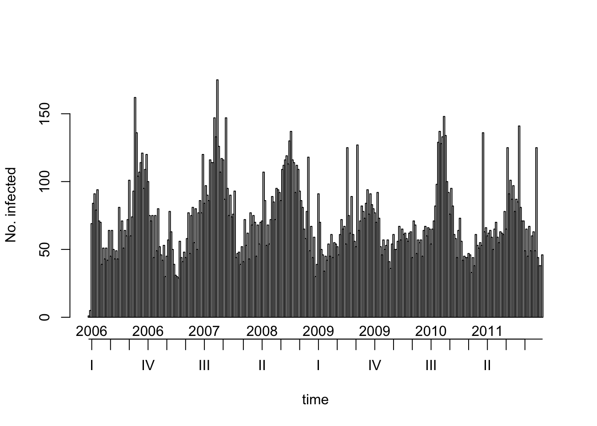
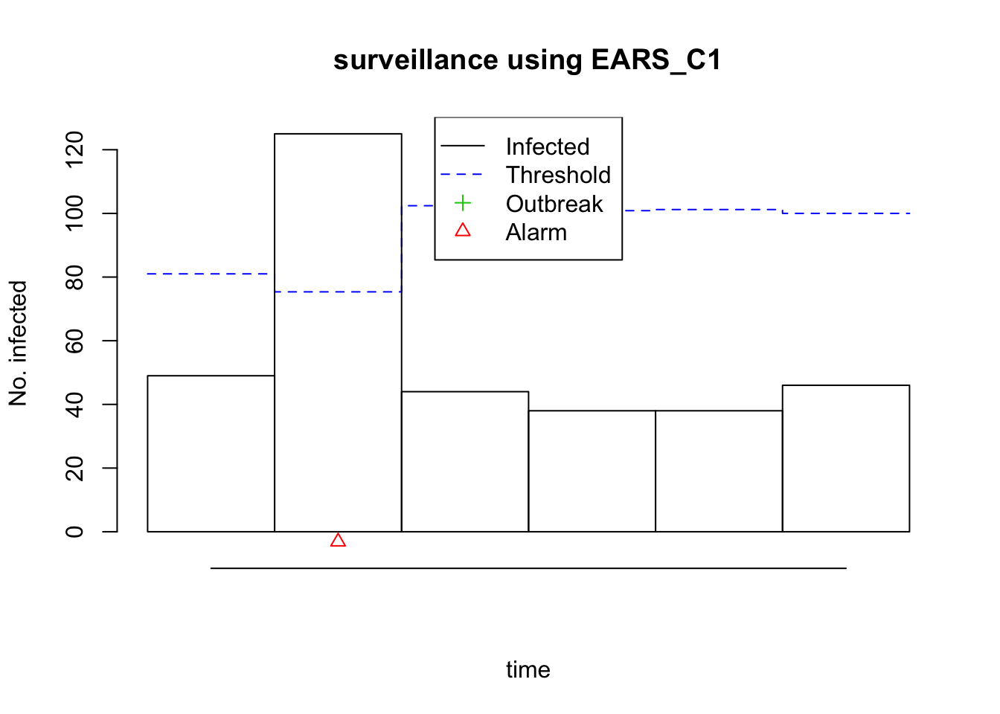

Monitor infectious diseases with surveillance
The hackathon team (and a cat)
November 29, 2016
Introduction
Imagine you are an epidemiologist in charge of Salmonella surveillance for a whole country. One of your tasks is to detect potential outbreak as early as possible, in order to start an investigation and remove, e.g., infected ham from the supermarkets in your country. The later you detect and investigate the outbreak, the more people will have gotten sick. How can you know about an outbreak before there are so many cases that everyone is aware of the outbreak?
Maybe (hopefully) you have data on the reported number of new cases of Salmonella each week. In absence of any outbreak, this number might be more or less the same every year for a given week: a little bit more in the summer, a little bit less in the winter. For other diseases it might always be approximately the same all the time no matter the season. So if for the present week you suddenly get more cases than usual… maybe you should make a few phone calls? The question is, how 1) to define what more than usual is and 2) to have your computer figure out alarms for you, instead of having to visualize and crunch numbers by hand? This is what surveillance does for you.
This tutorial will show how to use data from the Belgian surveillance system of infectious diseases for detecting an outbreak. The data are from the years 2005 to 2012, but we shall use them as if we were still in 2011, in order to perform prospective surveillance as it happens in real life: is there an anomaly in the number of cases this week? In other words, should you get worried now about a possible outbreak based on the currently available data?
First step: getting the data into R
For this, ask your favourite data manager to set up a data connection, or follow steps similar to the following, where we use data from a csv file that we download from this page and that we then save as .RData. In this case we download the data behind the excellent Belgium epistat website.
belgium <- readr::read_csv("https://epistat.wiv-isp.be/data/public_cases.csv")How does this data look like? Let us have a look at the head of the data.frame.
knitr::kable(head(belgium))| Age | DateMonday | Gender | Subject | NUTS2 |
|---|---|---|---|---|
| 34 | 2005-01-03 | F | CAM_SP | 21 |
| 0 | 2005-01-03 | M | CAM_SP | 25 |
| 0 | 2005-01-03 | M | V_RTV | 21 |
| 1 | 2005-01-03 | M | V_RTV | 25 |
| 2 | 2005-01-03 | F | V_RTV | 21 |
| 1 | 2005-01-03 | F | V_RSV | 25 |
| This d | ataset has on | e row per | notified | case, with |
Ageage of the patient (in years);DateMondaydate of the Monday of the week of report: we are dealing with weekly data;Gendergender of the patient;Subjectcategory of the disease, e.g.SALMfor Salmonella;NUTS2administrative subdivision of Belgium where the case was reported.
We will start by looking at time series of cases for the whole country, i.e. aggregated for all age group and genders. For this, let’s write a small function. This will load, filter and aggregate the data, and then make a sts object out of it. Such an object can be thought of as a wrapper for a time series, which will then be used by surveillance.
belgium_sts <- function(disease, data){
# filter the chosen disease
disease_data <- dplyr::filter_(data, paste0("Subject == \"",disease,"\""))
# aggregated cases by week to get the weekly number of cases
observed <- dplyr::group_by(disease_data, DateMonday)
observed <- dplyr::summarize(observed, n_cases = n())
# create the sts object
disease_sts <- surveillance::sts(observed = observed$n_cases, # weekly number of cases
start = c(min(lubridate::year(observed$DateMonday)), 01), # first week of the time series
frequency = 52, # weekly data
epochAsDate = TRUE, # we do have dates, not only index
epoch = as.numeric(observed$DateMonday) # here are the dates
)
disease_sts
}Okay, let’s test this function and make a quick plot!
library(surveillance)
salmonella <- belgium_sts(disease = "SALM", data = belgium)
plot(salmonella)
So you see the seasonality of Salmonella reported cases: there are more of them in the summer.
Wait, are you lost here trying to transform your data into a sts object?
Let’s have a look at this code again:
disease_sts <- surveillance::sts(observed = observed$n_cases, # weekly number of cases
start = c(min(lubridate::year(observed$DateMonday)), 01), # first week of the time series
frequency = 52, # weekly data
epochAsDate = TRUE, # we do have dates, not only index
epoch = as.numeric(observed$DateMonday) # here are the dates
)This code helps going from a data.frame to sts, so basically a table. Let’s say it’s a table of chocolate (the weekly number of cases), eggs (the date of the Monday at the beginning of each week), and on the side butter (the frequency of the data, which is weekly) and sugar (the oldest week of the data). Using the code above, we prepare this information for the surveillance package. This package is a bit lazy so even if you feed it a vector of dates, you need to tell it what the frequency and minimum is. So from our data.frame/pile of ingredients we make a sts-object/cake, and then the analysis is… a piece of cake!
Okay, this was a bad pun, so let’s monitor this time series and look for outbreaks.
Second step: looking for outbreaks
So, let’s pretend we are still in 2011, so we’ll use only the data up to 2011.
salmonella2011 <- salmonella[salmonella@epoch < lubridate::ymd("2012-01-01")]
plot(salmonella2011)
How do we know whether any of the past weeks had too high a number of cases? We’ll start by using a pretty simple method from the CDC (okay, name dropping here), EARS (Early Aberration Detection System) C. This method will allow to use the weeks now - baseline up to now - 1, for which we’ll compute the mean and standard deviation of the number of cases. We assume that the number of cases follows a non time-varying normal distribution during those weeks, and use the (1 - alpha)-th quantile of those distribution as a threshold. Let’s say that if you wanted to use mean + 2 standard deviation as a threshold, this method actually nearly does that!
no_of_weeks <- length(salmonella2011@observed)
monitored_salmonella2011 <- earsC(salmonella2011,
control = list(range = c((no_of_weeks - 5): no_of_weeks),
method = "C1",
alpha = 0.05,
baseline = 10))In the code above, we used a given variant of EARS C, denoted C1, and a value of 0.05 for alpha, and we used the 10 last weeks for calculating the mean and standard deviation of the number of weekly Salmonella cases. You can actually play with parameters and see how this changed the results by using this Shiny app..
But we can already look at the results of the version of the algorithm we have just applied:
plot(monitored_salmonella2011)
Yes, that’s way too many cases for one those weeks: the number of observed cases is higher than the threshold and we get a small frightening red triangle (the outbreak symbol!)! We might have discovered an outbreak!
Note to the tidyverse addicts out there… You can transform sts objects into data.frame and then use all your usual tools!
monitored_salmonella2011_df <- as.data.frame(monitored_salmonella2011)
knitr::kable(monitored_salmonella2011_df)| observed | epoch | state | alarm | upperbound | population | freq | epochInPeriod |
|---|---|---|---|---|---|---|---|
| 49 | 2011-11-21 | FALSE | FALSE | 81.00509 | 1 | 52 | 0.9038462 |
| 125 | 2011-11-28 | FALSE | TRUE | 75.35676 | 1 | 52 | 0.9230769 |
| 44 | 2011-12-05 | FALSE | FALSE | 102.41307 | 1 | 52 | 0.9423077 |
| 38 | 2011-12-12 | FALSE | FALSE | 100.85656 | 1 | 52 | 0.9615385 |
| 38 | 2011-12-19 | FALSE | FALSE | 101.20805 | 1 | 52 | 0.9807692 |
| 46 | 2011-12-26 | FALSE | FALSE | 100.00580 | 1 | 52 | 1.0000000 |
Conclusion
Now you’re the cool person who knows how to monitor their surveillance data in order to automatically detect outbreaks.
If you want to know more about the subject, e.g. more algorithms, more maths, please head to the Journal of Statistical Software and read our paper about surveillance. Aspects of your data you might want to better take into account might be seasonality, reporting delays, you name it: the chance is high that surveillance has something to offer. And tell your friends about surveillance!